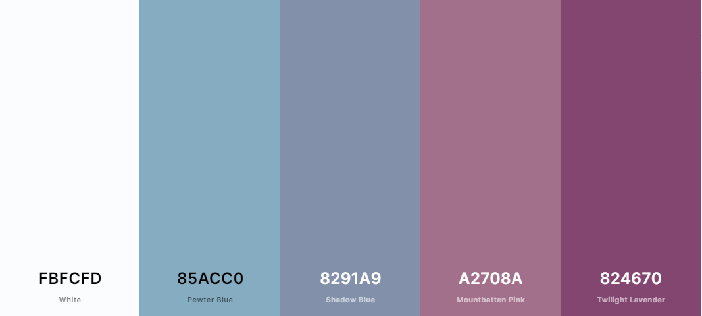

Color Scheme
The White will be for the text, the Peter Blue for the background, the Shadow Blue for the borders, Mountbatten Pink for the highlighters, and the Twilight Lavender for the main titles or important words.
The White will be for the text, the Peter Blue for the background, the Shadow Blue for the borders, Mountbatten Pink for the highlighters, and the Twilight Lavender for the main titles or important words.